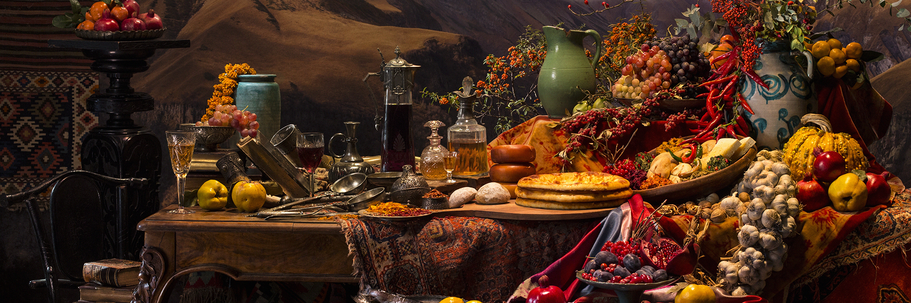
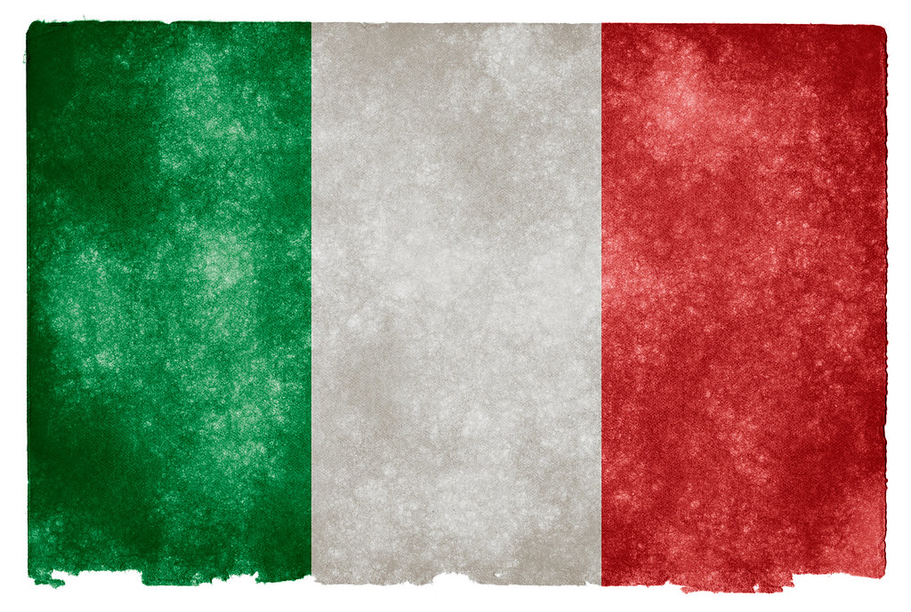
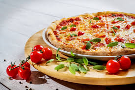
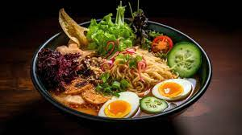

Georgian food.

So why are food lovers drawn to this faraway sliver of terrain smaller than South Carolina? For starters, it's
hard to find dishes anywhere that so deftly intermingle Eastern and Western techniques: platters of soup
dumplings, called khinkali, are as big an attraction in Tbilisi as they are in Shanghai, while Georgia's supple
flatbreads parallel India's best naan, puffed and scorched on the inner walls of traditional clay toné ovens.
The similarities aren't coincidental. Sitting at the midpoint of ancient East–West trade routes, Georgians had
the advantage of being able to cherry-pick the best of what the Greeks, Mongols, Turks, and Arabs were cooking
along the Silk Road. When Russian poet Alexander Pushkin asserted that "every Georgian dish is a poem," I like
to think he wasn't referring just to flavor and artful presentation but also to the coalescence of cultures on
the plate.
Learn more about
The 10 Dishes That Will Make You Fall in Love With Georgian Food.

- Khachapuri Adjaruli
- Churchkhela
- Khinkali
- Ajapsandali
- Lobio
- Mtsvadi
- Tklapi
- Kharcho
- Pkhali
- Lobiani
Khachapuri Adjaruli.

A molten canoe of carbohydrates and dairy, the quantity of sulguni cheese alone in khachapuri Adjaruli is enough
to land a lactose-intolerant friend in the ER. But the decadence doesn't end there. Seconds after the bread is
pulled from the toné, a baker parts the cheese to make way for a final flourish: hunks of butter and a cracked
raw egg. When the bubbling mass is placed before you, you must wield your spoon fearlessly and, working from the
yolk out, vigorously swirl the ingredients together until hypnotizing spirals of orange and white begin to
appear. At this point—and God forbid the mixture get cold—tear off a corner of bread and dunk with conviction.
This is how Adjarians eat khachapuri, an umbrella genre of cheese-filled breads that are sold hot at
hole-in-the-wall bakeries around the country. While each region has its favorite iteration of
khachapuri—vegetables, meats, or legumes may be added—khachapuri Adjaruli has eclipsed the competition to become
Georgia's national dish.
Italy food.

When it comes to food and drink, few can top Italy’s stellar reputation. Ask anyone to name their favourite
dishes and you can guarantee things like pizza, pasta and gelato soon come tripping off the tongue.
And while these iconic dishes are loved around the globe for very good reason, Italy boasts plenty more
crowd-pleasers. So whether you’re staying in the sun-soaked south or the mountainous north, get your taste buds
ready: they’re about to go wild.
Learn more about
The 10 Dishes That Will Make You Fall in Love With Italian Food.

- Pizza
- Pasta
- Arancini
- Focaccia
- Italian Cheese
- Lasagna
- Ossobuco
- Risotto
- Truffles
- Gelato
Pizza:

Number one on our list of the best traditional foods in Italy has to be pizza. Everyone knows what pizza is, it
needs no introduction, but what you probably know as pizza isn’t quite the same as in Italy. Pizza has been
around the Italian Peninsula for centuries, but it was in 1889 when Queen Margherita of Savoy visited the city
of Naples that the famous pizza Margherita was born. The story goes that the queen was tired of French cuisine
and that she summoned Raffaele Esposito, a well-known pizza-maker, to create an original pizza for her. Queen
Margherita approved of the pizza consisting of tomato sauce, mozzarella and basil. Immediately after this,
Raffaele Esposito named his pizza the Margherita and asked the Queen for her royal approval.
Japan food.

Unique and beguiling, Japan is a country of binaries. It straddles both the traditional and ultra-modern, with
buzzing cities alongside stunning natural landscapes. Its food is famously nutritious, with a diet based around
super-fresh, seasonal products.
Learn more about
The 10 Dishes That Will Make You Fall in Love With Japan Food.

- Sushi
- Ramen
- Unagi
- Tempura
- Kaisekii
- Soba
- Shabu-shabu
- Okonomiyaki
- Tonkatsu
- Yakitori
Ramen:

Ramen (egg noodles in a salty broth) is Japan’s favourite late-night meal. It’s also the perfect example of an
imported dish – in this case from China – that the Japanese have made completely and deliciously their own.
There are four major soup styles: tonkotsu (pork bone), miso, soy sauce and salt. Fukuoka is particularly famous
for its rich tonkotsu ramen while pungent miso ramen is a specialty of Hokkaido.